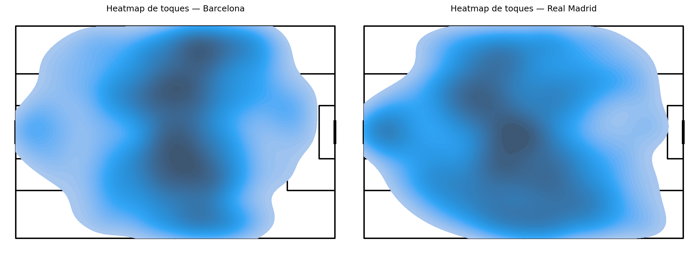
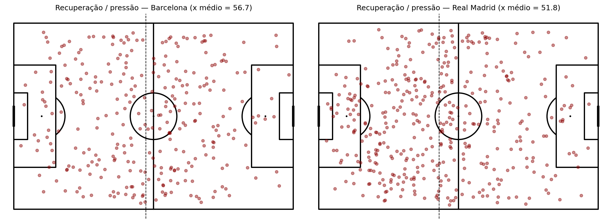
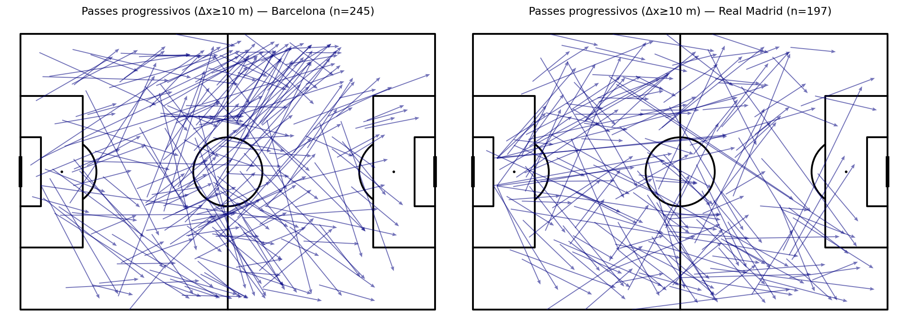
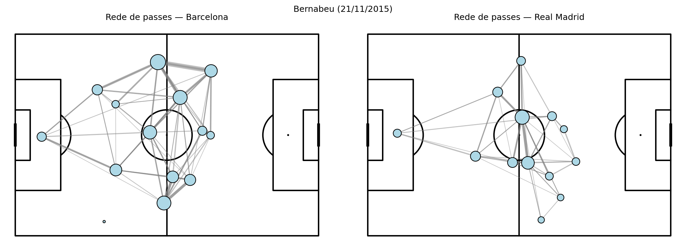
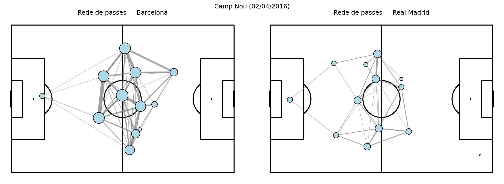
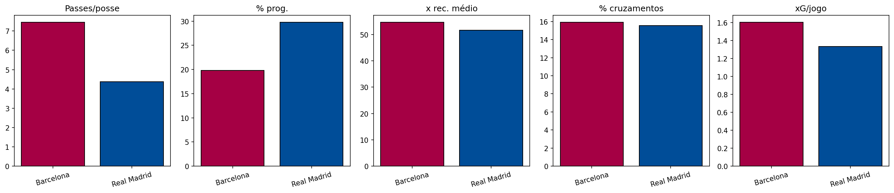

Como identificar automaticamente o estilo de jogo de um time?
Maio de 2026
Competição e jogos analisados
| Campo | Valor |
|---|---|
| Competição | La Liga — temporada 2015/2016 |
| IDs | competition_id=11, season_id=27 |
| Partida 1 | match_id=266424 — 21/11/2015 — Real Madrid 0 ×
4 Barcelona (Bernabéu) |
| Partida 2 | match_id=267533 — 02/04/2016 — Barcelona 1 × 2
Real Madrid (Camp Nou) |
Justificativa do recorte: dois adversários de perfil tático contrastante e reconhecível globalmente; dois confrontos na mesma temporada (cada time uma vez como mandante), permitindo comparar DNA agregado sem inflar o escopo.
Entidades principais
competitions.json e pasta
matches/<competition_id>/<season_id>.json.match_id,
mandante, visitante, placar (arquivo de partidas).team (nome) e identificador
implícito nos eventos.player e
position quando o evento é associado a um jogador.id, index, period,
minute/second, type (Pass, Shot,
Pressure, …), localização (x, y), subestruturas
pass, shot, etc.Estrutura de armazenamento
events/<match_id>.json).analise/lib_analise.py (load_events,
load_all). Colunas planas facilitam agregação em SQL-like
(groupby) e visualização.Atributos relevantes no DataFrame
| Coluna | Tipo (lógico) | Uso |
|---|---|---|
match_id |
inteiro | Junção com metadados de partida |
minute, second |
inteiro | Tempo de jogo |
type |
texto | Filtrar passes, chutes, pressões |
team |
texto | Agregar por Barcelona / Real Madrid |
x, y |
float | Mapas e heatmaps (campo 120×80) |
possession, possession_team |
int / texto | Sequências de posse (M1) |
pass_end_x, pass_end_y,
pass_cross, pass_outcome |
float / bool / texto | Progressão e cruzamentos (M2, M4) |
shot_xg, shot_outcome |
float / texto | Ameaça (M6) |
Todas as métricas foram calculadas sobre a união dos dois
jogos, agregadas por team, salvas em
figuras/tabela_dna.csv e reproduzidas no notebook
analise/analise_dna_tatico.ipynb.
(match_id, possession, possession_team); contar passes na
posse; duração aproximada = diferença entre minute máximo e
mínimo na posse; média de passes por posse e fração de posses com ≥5
passes.Resultado (resumo): Barcelona apresenta média de passes por posse maior (~7,45 vs ~4,37) e duração média da posse maior (~0,40 vs ~0,25 min aproximados), alinhado a um perfil de circulação e retenção. O Real Madrid troca de posse com menos passes por sequência.
pass_outcome nulo); Δx = pass_end_x − x;
avanço médio; passes progressivos = Δx ≥ 10 m.Resultado: o Real Madrid apresenta avanço médio maior (~4,35 m vs ~1,83 m) e % maior de passes progressivos (~29,8% vs ~19,8%), sugerindo jogo mais direto na amostra; o Barcelona completa mais passes totais com avanço médio menor (circulação + construção).
pct_esq e pct_dir indica viés de
corredor no terço final.Resultado: Barcelona concentra ~60% dos eventos ofensivos no lado direito do ataque (y < 40); o Real Madrid está mais pela esquerda (~55%). Útil para scouting de sobrecarga e combinações.
pass_end_x ≥ 102 (aproximação da grande área);
cruzamentos = flag pass_cross;
pct_cruzamentos = cruzamentos / total de passes para a
área.Resultado: ambos com % de cruzamentos similar (~15,6–15,9%) sobre o total de passes que entram na área — diferença tática maior aparece em M2/M3/M5.
x em eventos
Ball Recovery, Pressure,
Interception, Duel; contagem de
Pressure.Resultado: Barcelona com x médio maior (~54,6 vs ~51,6) e menos eventos de pressão que o Real na amostra (194 vs 315) — leitura conjunta: quando pressiona/recupera, tende a fazê-lo um pouco mais alto; o Real gera mais volume de pressão registrada.
statsbomb_xg; gols totais nos dois jogos.Resultado: Barcelona ~16 chutes/jogo e ~1,60 xG/jogo com 5 gols nos dois jogos; Real Madrid ~14 chutes/jogo e ~1,33 xG/jogo com 2 gols. Coerente com o placar agregado da amostra (5–2 em gols).
Pressure
e duelo).possession da StatsBomb como proxy
operacional; não substitui tracking óptico.Impacto na análise: as métricas descrevem padrões registrados na amostra; generalizações para outras competições ou anos exigem mais dados e validação externa (vídeo, tracking).
As figuras foram geradas com mplsoccer (campo tipo
StatsBomb) e matplotlib, salvas em figuras/
(script analise/run_gerar_figuras.py).

Figura 1 — Densidade de eventos com coordenadas
(x,y) por time: onde cada equipe “vive” no
campo.

Figura 2 — Dispersão de recuperação / interceptação / pressão; linha tracejada no x médio (proxy de altura média).

Figura 3 — Setas de passes com Δx ≥ 10 m (progressivos).

Figura 4a — Rede de passes (≥3 ligações entre o mesmo par); jogo 266424.

Figura 4b — Mesmo modelo para o jogo 267533.

Figura 5 — Barras comparativas: passes/posse, % passes progressivos, x médio de recuperação, % cruzamentos na área, xG/jogo.
Padrões visíveis: mapas evidenciam ocupação de espaço; redes mostram eixos de circulação (hubs); barras sintetizam o DNA numérico para o relatório e para o dashboard proposto na Parte 2.
Problema: comissões técnicas e analistas precisam resumir o estilo do adversário (construção vs transição, corredores preferidos, altura de pressão, finalização) com base em dados objetivos, em tempo hábil para a semana de jogo.
Relevância: reduz dependência só de impressão subjetiva; apoia decisão sobre pressing, compactação, e marcação de corredores; comunica padrões a jogadores via visualizações simples.
events/*.json +
matches/*.json (metadados) da pasta local ou API
futura.lib_analise) → agregações M1–M6 → tabela dna
→ exportação de PNG/PDF.O sistema rotula automaticamente, por time e janela de jogos:
Saída: perfil comparativo (Barcelona vs Real Madrid
na demo) + alertas textuais gerados por regras (ex.: se
pct_progressivos > 25% e
media_passes_por_posse < 5 → tag sugerida “Transição
vertical”).
Wireframe textual (tela única “Adversário”):
Usuário final: analista de performance ou auxiliar técnico — prioriza comparabilidade e leitura rápida antes do vídeo tático.
Modelagem (entidade Evento + DataFrame)
↓
Métricas (M1–M6 — proxies de estilo)
↓
Visualização (mapas, redes, barras)
↓
Interpretação / decisão (preparação de jogo)A modelagem garante que cada métrica tenha rastreabilidade até o evento bruto; as métricas comprimem milhares de linhas em poucos números interpretáveis; as visualizações devolvem contexto espacial que números sozinhos escondem.
Exemplos do que pode ser narrado (ajuste às aulas reais):
possession, passes progressivos com limiar
em metros, e normalização por jogo.| Análise inicial (conceitual) | Sistema proposto | |
|---|---|---|
| Dados | Eventos soltos | Pipeline + DataFrame versionado |
| Métricas | Contagem genérica | 6 proxies alinhados a leitura tática |
| Visual | Ideia genérica de “mapa” | 5 figuras padronizadas + dashboard |
| Decisão | Interpretação ad hoc | Painel comparativo replicável |
O que se manteve: foco em eventos com
coordenadas e na pergunta sobre estilo.
O que evoluiu: formalização M1–M6, script reprodutível,
e proposta de produto para análise de adversário.
Na amostra (dois Clásicos 2015/16), o Barcelona apresenta DNA de maior passes por posse, maior duração de posse, maior concentração pelo corredor direito no terço de ataque e maior xG e gols; o Real Madrid aparece com jogo mais vertical (maior avanço médio e % de passes progressivos), mais ações de pressão registradas e recuperação média um pouco mais baixa no conjunto M5 — leitura sempre condicionada ao n=2 jogos e ao contexto histórico da temporada.
doc/).Repositório de código deste trabalho: pasta
analise/ (notebook + lib_analise.py +
run_gerar_figuras.py), figuras/ (saídas),
relatorio/ (este documento).